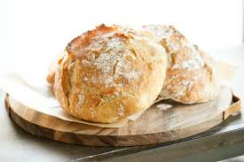

No-Knead Overnight Artisan Bread (Baking)
Crusty, bakery-style bread with almost zero work

Ingredients
- 3 cups (360g) all-purpose or bread flour
- 1 ½ tsp salt
- ½ tsp instant yeast
- 1 ½ cups (360ml) warm water
Instructions
- In a large bowl, whisk flour, salt, and yeast. Add warm water and stir with a wooden spoon until a shaggy dough forms (no kneading!).
- Cover the bowl with plastic wrap and let sit at room temperature for 12–18 hours (overnight).
- Turn dough onto a floured surface. Fold it over itself a few times, then shape into a ball.
- Place dough on a piece of parchment paper, cover loosely, and let rise for 30 more minutes.
- While it rises, place a Dutch oven (cast iron pot with lid) into the oven and preheat to 450°F (230°C).
- Carefully lift the parchment with dough into the hot pot. Cover and bake for 30 minutes. Remove lid and bake another 10–15 minutes until deep golden brown. Cool on a wire rack
Enjoy your cooking!